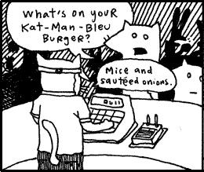

Why's (Poignant) Guide to Ruby, Chapter Six #

The foxes are back. After two chapters of diversions—first, down in the habitat of The Elf with The Pet Ham, then, travelling space and time with Dr. Cham, a goat and his niece Hannah—we’re at last back with our two heros Fox Tall and Fox Small as they search for Tall’s stolen pickup truck. Metaprogramming, class design, regexps, Dwemthy, Dwemthy, Dwemthy.
Thankyou for hanging in there. I know it’s been a long wait on this one. I spent some time getting syntax highlighting working, improving styles, rewriting sections and rescanning comics.
I’d also like to thank Joel Spolsky and the folks at Apress who will be publishing chapter three in the Best Software Writing I, which looks to be out in a month. Their proofreading and corrections have been terrific.
Phil
Seriously? Chapter 3: [A Quick (and hopefully painless) ride through Ruby] is going to show up in a Spolsky book? Didn’t know Spolsky was so hip to the Ruby scene. Next thing you know, Peter Jackson will be making the Poignant Guide into a movie in a year or two.
Hey, the syntax highlighting is a nice touch, BTW .
Daniel
You’ve got some issues with your HTML for the syntax highlighting.
You’re not allowed to be DIVs within PREs – PRE tags can only contain inline elements.
Firefox barfs on this and doesn’t treat the code as being within the PRE .
Sam
That chapter was extraordinarily morbid.
olleolleolle
Whatta chapter! Whatta chapter! +1 syntax highlihting. And kudos for the smelly typography (OK, I was looking for a kind word… scented typography, then).
The text opens up the landscape behind the portals, reveals the mustiness of the tomes, and informs the reader of the hidden power of OpenURI. I get secretly happy for those who learn Ruby solely through this medium.
Sleeper
As said Daniel, there’s some issue regarding the PRE .. They are displayed (on Firefox 1.0.4 here) on one line :( But this is great stuff …
why
Err, where’s the code at? Help!
marcel
Never thought I’d find a Terry Eagleton quote in a programming manual :)
Don’t stop now, ya hear?
jarkko
gives a mighty hand for landing in Spolsky’s essay collection. I’ll be back with more acclaim after I’ve read chapter six.
why
Moved the div outside the pre. Maybe now they will settle into place. Please tell me more problems.
Sleeper
Yeah .. that’s much better .. but note that some text still goes outside the boxes (for example the one beginning with USING THE L&F SERVER )
tmoertel
The W3C XHTML validator likes it now: Validation Results for Chapter 6
MenTaLguY
Wow. Good, good, excellent.
murphy
Wow, another chapter! New stories with my beloved foxes!
I don’t know if the syntax highlighting is really an improvement…maybe it is just the strange colors that are irritating me.
Green and yellow backgrounds don’t fit in the rosee layout, I think. You should keep the purple and only give literals and keywords another color. Coloring the string quotes in another color could also confuse beginners.
So I propose less syntax highlighting to get more enlightened readers.
Don’t get me wrong: I love highlighting! It would be funny if you included a small hint about the syntax highlighting (a sidebar?), to tell the reader why Ruby code isn’t just black/white.
There is a bug in chapter 3, section 4:
should be
to become highlighted correctly.
Another thing: The chapter subsections in the index are quite small on my Firefox. I don’t know where it comes from.
OK, enough nagging. WpGtR is great!
murphy
hum? what does
do in chapter 3, paragraph “Blocks”?
I wonder how this came into the code…
MenTaLguY
Ok, now that I’ve had some time for it to sink in, I can proofread a bit.
First, a couple minor typos:
“techtonic” should be “tectonic”, and “so shape to write this book” should obviously be “no shape to write this book”.
Next, you need some sort of brief transitional paragraph into the cloneberries section. Don’t need much, but the transistion is too abrupt as it is currently.
Finally, you need to get rid of the syntax highlighting on stuff that isn’t Ruby—the sample output in particular (this is most obvious with the “Simon? Simon?” bit).
That’s all that jumps out at me at the moment.
why
Great work, more more.
murphy: The
@stdout[0]you’re seeing is a bug in the testing mechanism for the Guide. I still need to finish it. It executes and checks the output of all the code in the book.Guud comments, menTaL. You got some.
Mark
Bravo, why!
Another great chapter. You are truly the Charlie Kaufman of the ruby world.
Pete
Sorry, why, but you still have some big issues in Safari (1.3, OS/X 10.3.9). All of the code is displayed on one line with no syntax coloring.
Switching over to Firefox for a good read.
MenTaLguY
Incidentally, I like the way you handled the metaclass section.
In terms of Creature specifically, the biggest weakness of my version was the obscurity of using (self << class ; self ; end) inline, and I think you found the best alternative.
Also, in general I think you struck a very nice balance in the presentation of the material.
undees
Wonderful. Especially loved the mind-bending metaprogramming, and the percent-signs-as-frogs metaphor.
Minor things:
hgs
I’m stunned by the artwork. [[OT]: is it all pen and ink, scanned? Or do you use software for this at all?] The details in the pictures must take ages.
Minor, minor buglets:
In the pics below Dwemthy’s Array title, you have AWESOME spelt ASWEOME in frame 1.
Under Walking, walking, Walking[...] the picture, in frame 2, has MY FAMLLY —no I.
And shouldn’t
monster_class = getsbe
monster_class = gets.chomp!to avoid a newline in the eval string?? I’ve not tried running it, but other readers may wonder about that.
Firefox: Yes, I always have that with DIVs-as-boxes (because I use large print): I think it’s a bug in firefox, the boxes don’t expand-right to fit the text. _Why—maybe you can copy some of this to a small page so this bug can be reported?
why
All the art is drawn in black ink. No penciling or planning. I find that if I try to plan a drawing it turns out cleaner, but lacks a sparky nuance. I do some reorganizing in Photoshop or the Gimp, but just cut-and-paste or contrasting. Oh and some coloring.
I’m not great at it and it takes forever. But Blixy draws on huge 11×17 paper and the detail is outrageous. Well thanks, hgs.
Comments are closed for this entry.